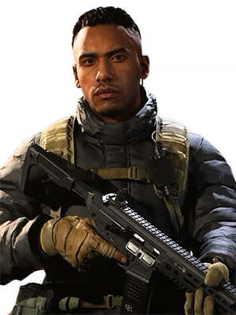

CHARACTER INFORMATION

Kyle Garrick enlisted in the British Army in 2014, serving in the Duke of Lancaster's Regiment, spending four years participating in test flights, jump competition and marksmanship before passing selection for Her Majesty's elite Special Air Service (SAS), where he is currently serving as a Sergeant for his sixth year. Tasked to Northern Ireland, Bosnia, Turkey, Iraq, Afghanistan, and Syria. Garrick has spent the better part of his career hunting terrorist fighters. Kyle earned the U.S. Marine Corps Gold Parachute Wings at Marine Corps Base Camp Lejeune in North Carolina whilst on an exchange attachment and routinely cross-loads on operations with the SAS' American counterparts, the Navy SEALs.
Required to undergo resistance to interrogation (RTI) testing, Kyle was the only candidate in his class to escape the facility and evade capture. Routinely subjected to physically and mentally uncomfortable scenarios, Kyle prides himself on high tolerance and tactical awareness. "Everyone talks about the physical aspect of being in the SAS but my job is mostly mental. Give me a guy who's got his mindset right over a guy who's twice as fit any day of the week."
With expertise in prime target elimination, demolitions, weapons tactics, covert surveillance and VIP protection, Kyle currently serves on the SAS domestic counter-terror program, executing homefield missions with metropolitan police forces on European soil. Challenging duty, due to civilian and collateral damage issues, Kyle seeks the opportunity to serve abroad again, and make a real difference combating the threat of terror.
It is revealed at the end of Modern Warfare's campaign that Kyle was given the nickname, Gaz. With the SAS notoriously shrouded in secrecy, Kyle explains— "We move in silence, do our job, and melt away. No publicity, no media. It takes stamina, willpower, guts and brains. Got those, we'll welcome you a try at being one of us. If you haven't got all that, then off with you..."